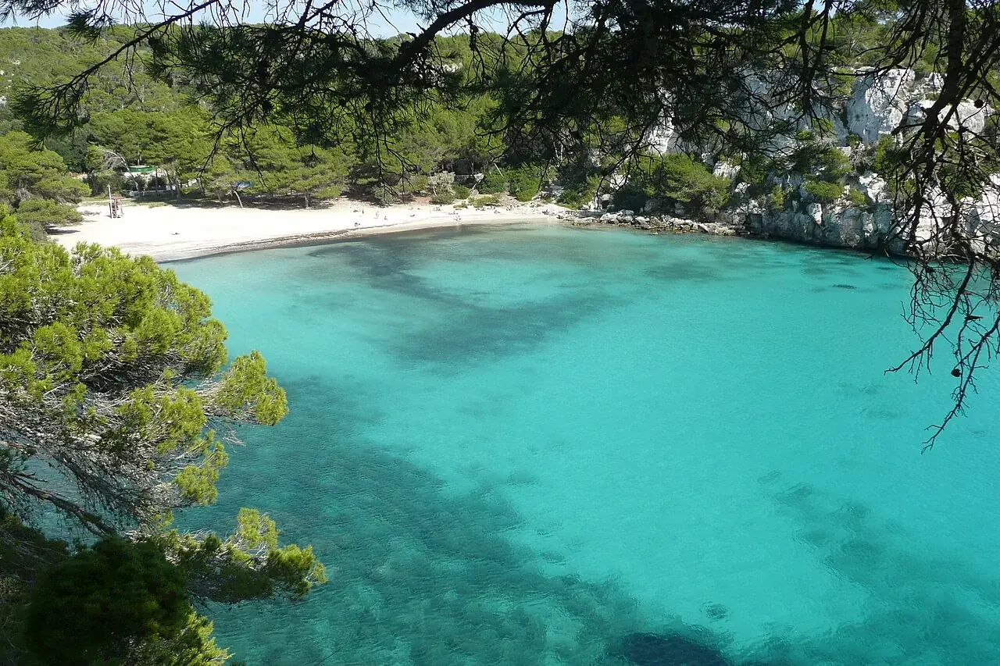

Cala Macarella
Minorque, Espagne · snorkeling, baignade

Sur la côte sud de Minorque, une crique de sable encadrée de pins et de falaises calcaires. Macarella et la petite Macarelleta voisine se découvrent aussi depuis le sentier côtier.
- Lieu
- Minorque, Espagne
- Niveau
- Variable selon les conditions
- Activités
- snorkeling, baignade
- Type d'eau
- Mer / océan
- Coordonnées
- 39.94, 3.94 (position approximative du secteur)
Ouvrir dans Ocean Buddy Télécharger sur l'App Store
Source : Tourisme des Îles Baléares.